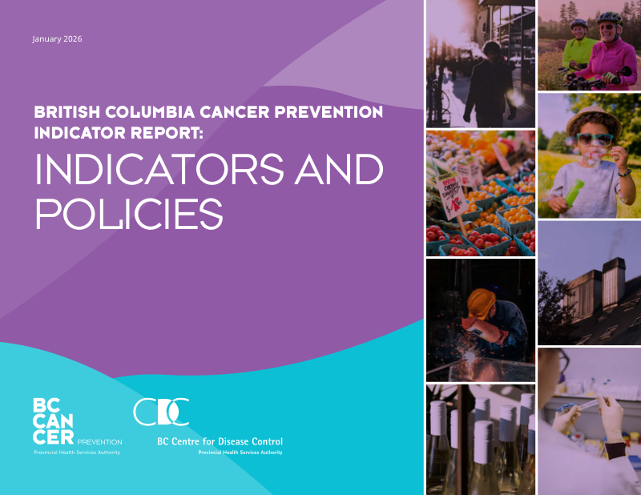
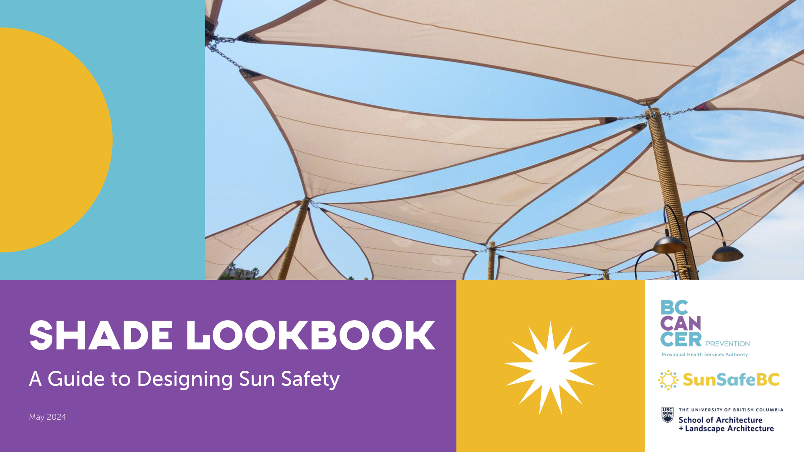

Program and Policy Resources

British Columbia Cancer Prevention Indicator Report
This report synthesizes evidence-based indicators, data sources and policy levers relevant to primary cancer prevention in British Columbia.
Published in January 2026 in collaboration with the BC Centre for Disease Control.

Shade Lookbook: A Guide to Designing Sun Safety
A practical resource for designers, urban planners and policymakers showcasing cost-effective shade solutions, from budget models to advanced systems, aimed at reducing UV exposure and supporting health-promoting public environments.